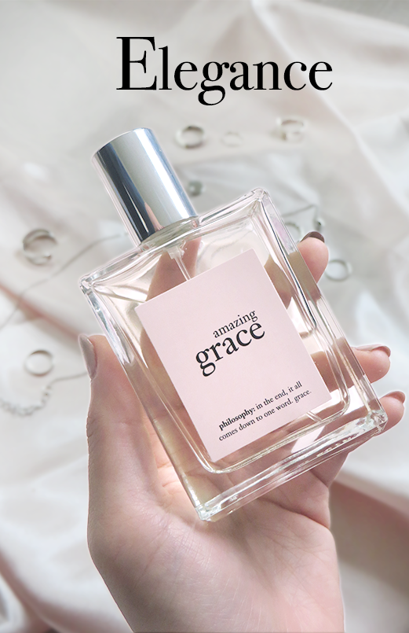
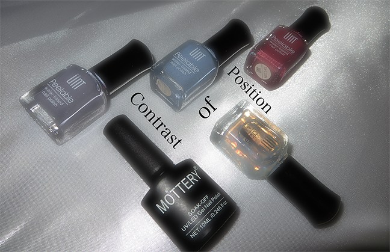
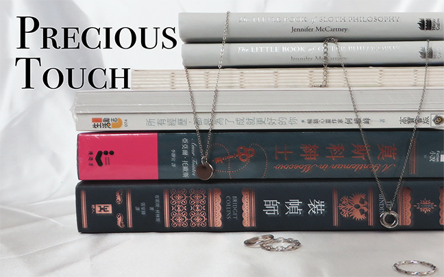

Soft Compositions
Design Fundamentals - Fall 2021 -Poster Series



Description
“Soft Composition” have five different poster ideas, each expressing a different design principle and composition. A common pattern within these posters are seen in Pintesst and Instagram posts where one is expressing a minimalist aesthetic feeling. The inspiration for this piece comes from the many hours of scrolling on Pinterest. Somehow I wanted to recreate these types of images with my photographs. At the same time, I wanted to create a magazine-looking cover. These pictures show an effortless feel to it but in reality, it took a lot of planning and provision.